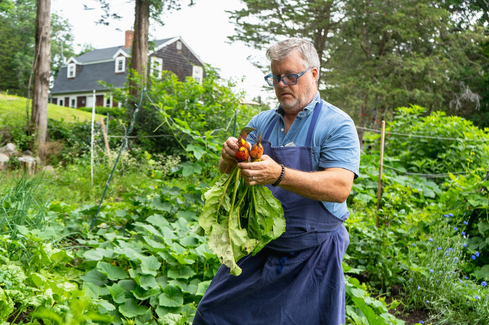
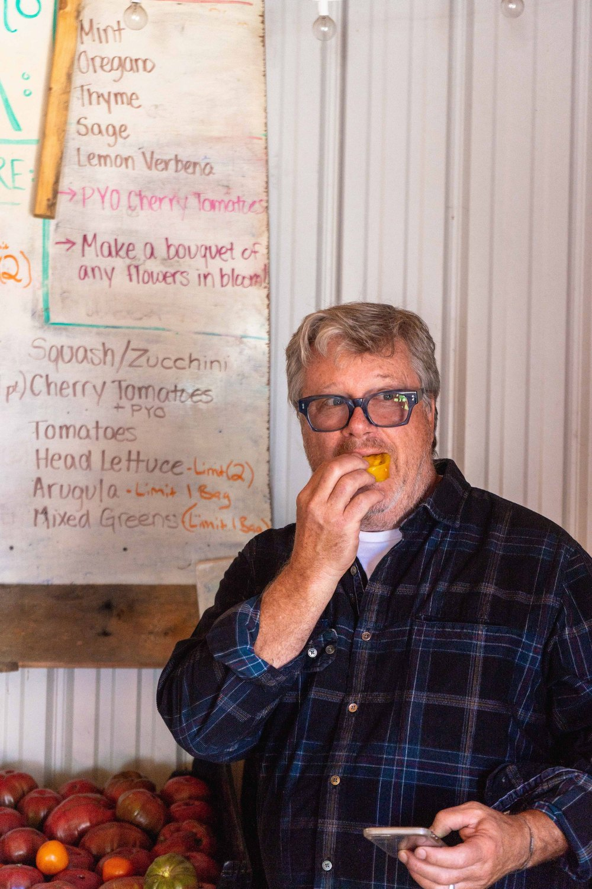
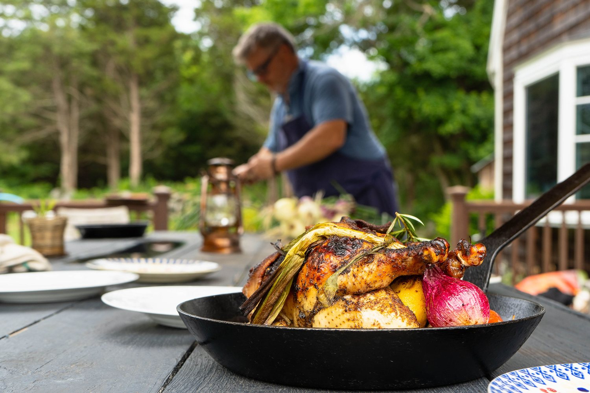
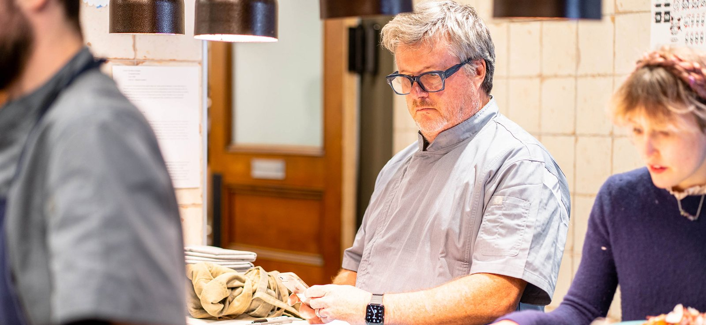
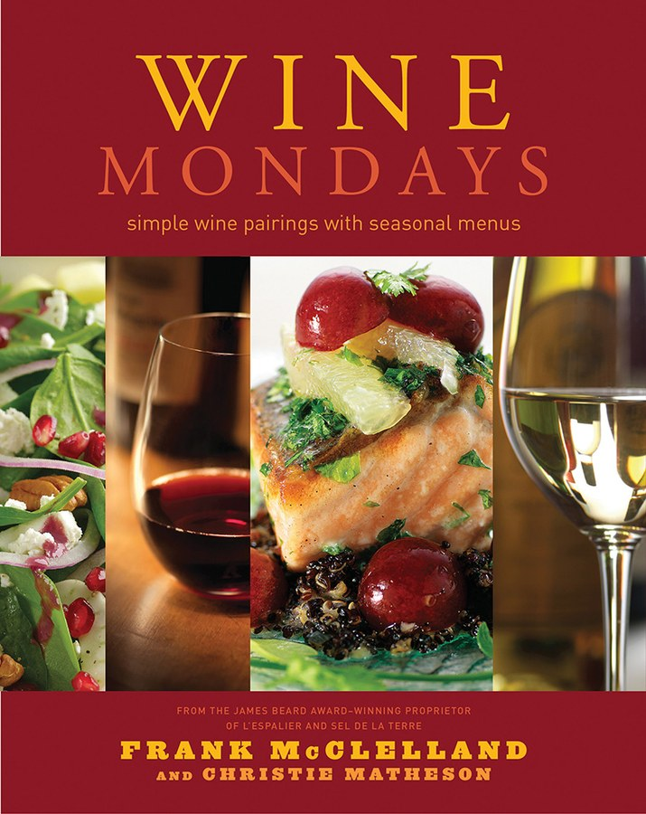
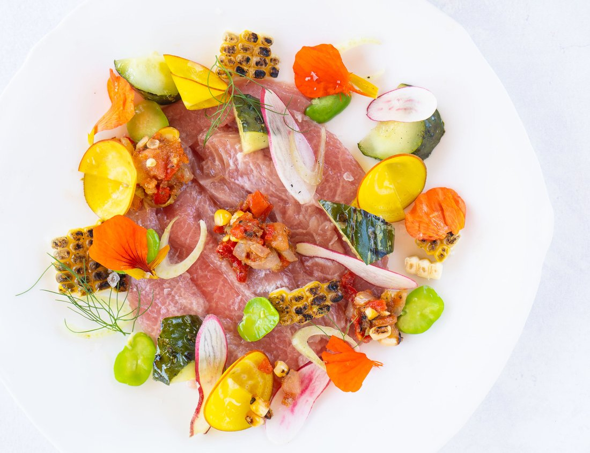
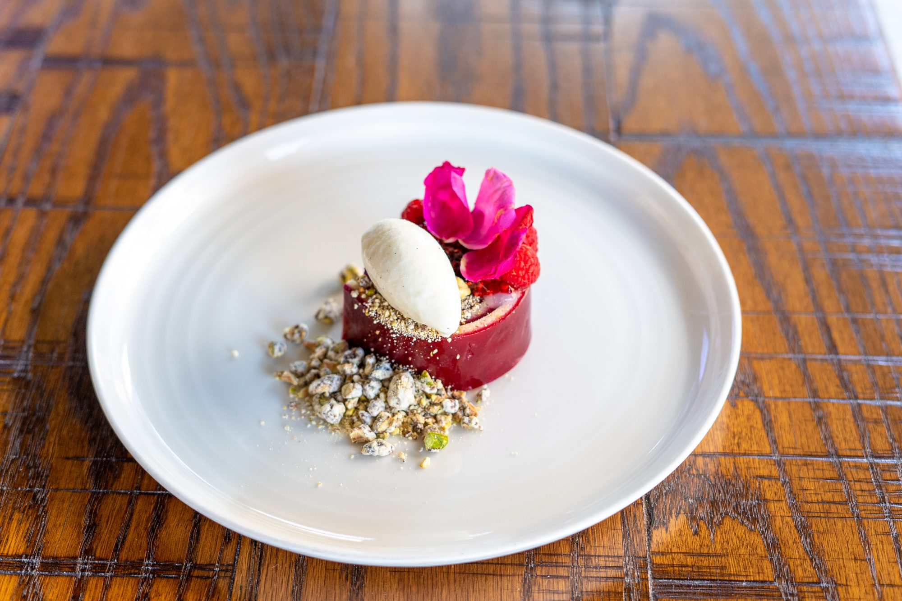
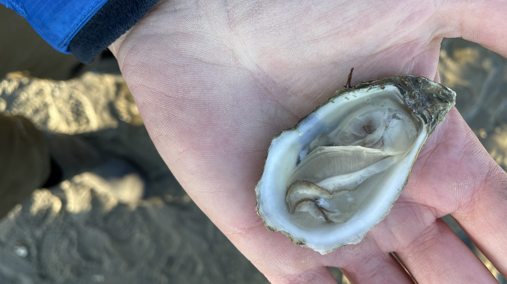
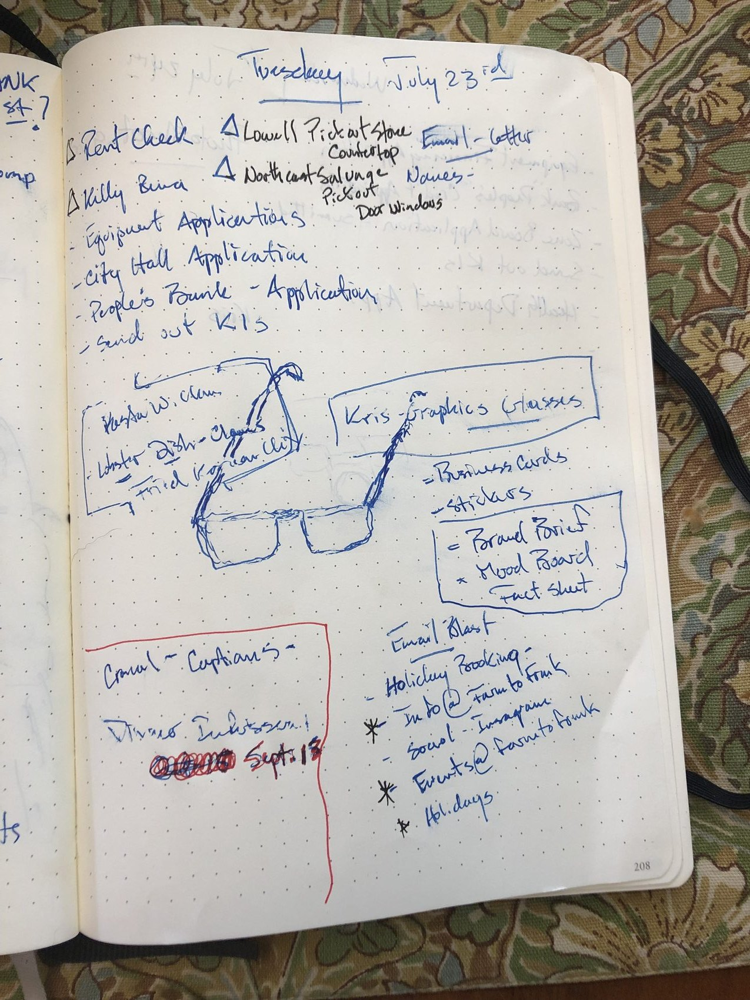
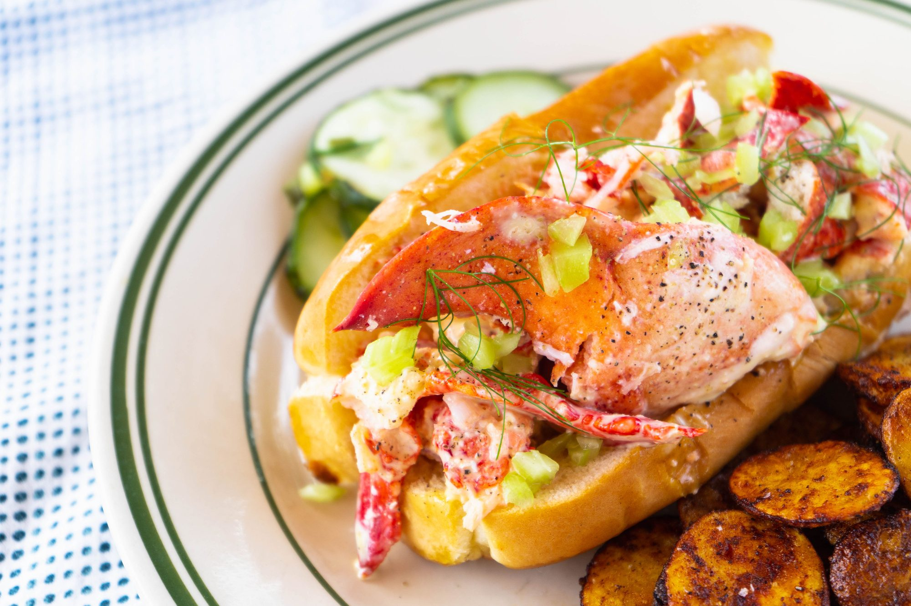

Atelier · Essex, Massachusetts
Forty five years of one vision, carried forward by different vehicles. The passion has never changed. Only the expression.

Pl. IApple Street Farm, Essex, Massachusetts
Classical French technique turned on New England ingredients. Four decades of using plates as canvases. There is a reason anyone who knows Frank knows that “Art Department” is how he refers to the kitchen and anyone who works there.
James Beard Award · Best Chef Northeast · 2007
Four decades of creating rooms people chose for the nights that mattered. Years dedicated to designing experiences that changed how people feel.
Nineteen consecutive AAA Five Diamond years
He owned the farm, planted the field and oversaw the harvest himself, then sent it down the road to his own pass. Chef. Farmer.
Apple Street Farm · Essex, Massachusetts
The farm’s regular bounty serves as inspiration for local chefs, much like a certain color or texture might stimulate an artist’s creativity.
The Boston Globe · June 21, 2012

Biography
Frank McClelland was raised on flavor. He has spent forty five years cooking in New England. He came up through Harvest in Harvard Square, the Cambridge kitchen that produced an entire generation of Boston chefs, and in 1988 took over L’Espalier.
Over the next thirty years he made it the restaurant Boston measured others against: a James Beard Award for Best Chef Northeast in 2007, nineteen consecutive AAA Five Diamond awards, and a Mobil Four Star rating every year from 1998 until the room closed in 2018.
What separated him was the field behind the plate. At Apple Street Farm in Essex he grew a large share of what his own kitchen cooked, years before provenance became a line on a menu. Along the way he opened Sel de la Terre, published Wine Mondays, and built FRANK in Beverly as a market, restaurant and shop.
He lives in Essex, Massachusetts, and still calls the kitchen the Art Department.
Lineage
Chef McClelland is a local farm boy who earned his toque at Harvest in Cambridge. His pricey menus work hard, and mostly succeed, at melding the locally grown and locally traditional with raffiné production and elite ingredients from afar.
The Wall Street Journal
The alumni of Harvest in Harvard Square read like a founding document for the modern Boston restaurant: Lydia Shire, Barbara Lynch, Jasper White, Bob Kinkead, Sara Moulton, Chris Schlesinger — and Frank McClelland.
Chef & Proprietor
Thirty years as chef and proprietor, from acquiring the restaurant in 1988 to its close in 2018. A room people booked months out for the night that mattered.
L’Espalier has been the site of countless marriage proposals and milestone celebrations, hosting everyone from Julia Child to Mick Jagger to Henry Kissinger. Elegant and expensive, it is synonymous with fine dining in Boston.

Owner & Farmer
A working farm that grew a large share of what arrived on the plate at L’Espalier, in a field he owned, planted and picked, and a supper club that brought guests out to eat where it was grown.
Everything they grow is just so beautiful. You can tell they just put a lot of care into the way they’re growing it… If they have it, I want it.

Chef & Owner · Boston
The casual counterpart to L’Espalier. French bistro cooking and a boulangerie, built to reach people on a weekday rather than an anniversary.

With Christie Matheson · Harvard Common Press, 2008
Simple wine pairings with seasonal menus, built from the long running Monday night wine dinners at L’Espalier.

Chef & Owner · Beverly, 2019–2023
Restaurant, market and shop. Food made daily in a scratch kitchen.




The duty of a good cuisinier is to transmit to the next generation everything he has learned and experienced…
Fernand Point La Pyramide, Vienne
Now
Every business he has built has been a way to carry the same argument into the world: that food is better when you know where it came from, and best when you grew it yourself. Frank is looking for the next canvas.
Menu, kitchen, sourcing and operations for restaurants and food businesses that want the standard without the guesswork. Or cooking and catering for you and your guests.